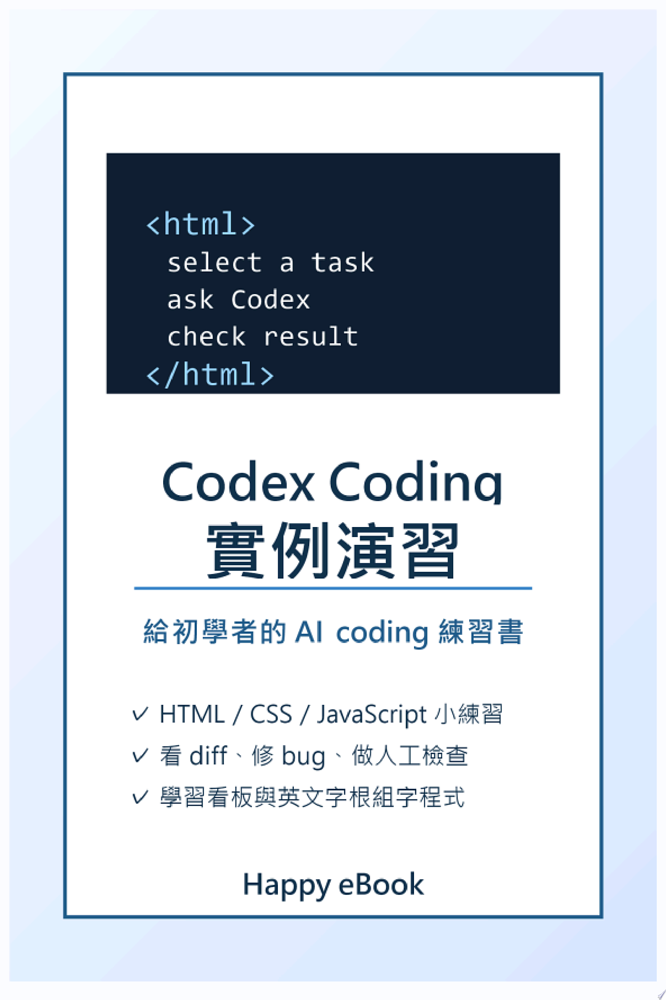

Codex Coding 實例演習：給初學者的 AI coding 練習書
給初學者的 AI coding 練習書

Codex Coding 實例演習：給初學者的 AI coding 練習書
給初學者的 AI coding 練習書
《Codex Coding 實例演習》是一本為 coding 初學者設計的 AI 輔助程式練習書。它不假設讀者已經懂 Git、框架或大型專案，而是從「把 Codex 當成會幫忙的同學」開始，一步一步建立安全、可檢查、可重做的學習方式。
本書前兩章先說明 Codex 可以幫忙讀程式、改程式、跑檢查，但最後仍由讀者決定目標與驗收；接著建立乾淨的練習資料夾，避免把真實密碼、重要檔案或大型專案交給 AI 亂改。
第 3 到第 5 章用三個最小網頁練習帶讀者認識 HTML、CSS 與 JavaScript：先做自我介紹卡片，再加上好讀的樣式，最後做出按鈕計數器。每章都提供可直接貼給 Codex 的 prompt、實作步驟、人工檢查點，以及新手可能卡住時的處理方式。
第 6 到第 8 章進一步練習真實 coding 流程：如何寫 bug report、要求 Codex 先重現再修復、看懂 diff、判斷能不能接受修改，並完成一個可新增、完成、刪除任務的學習看板。
第 9 章把 coding 與英文學習結合，做一個「英文字根組字程式」。讀者不是自行輸入，而是從下拉選單選擇 prefix、root、suffix，組合出英文單字，並用瀏覽器內建 speechSynthesis 朗讀結果。章節也清楚說明：範例資料 Richmond 核心英文單字是從教育部國中小基本英語字彙 1200 字詞整理成教學範例；教育部公布的是基本字彙表，不是官方字根表，因此組合結果仍應查字典確認。
附錄提供初學者 prompt 模板與 10 張小練習卡，方便讀者在 10 到 30 分鐘內完成一個小任務。這本書的目標不是讓讀者一次學會所有程式語法，而是先學會一個穩定循環：小任務、請 Codex 幫忙、自己檢查、發現問題、再修正。